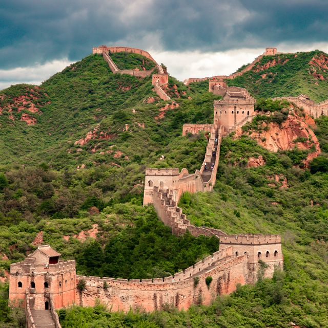

Construida entre el 770 y el 476 aC, la Gran Muralla China es una maravilla arquitectónica y el mayor proyecto de defensa militar del mundo antiguo. Mide 21.196,18 km y tiene una altura promedio de 7.8 metros. Cumple varias funciones como combate, comando, observación, comunicación y ocultación.
